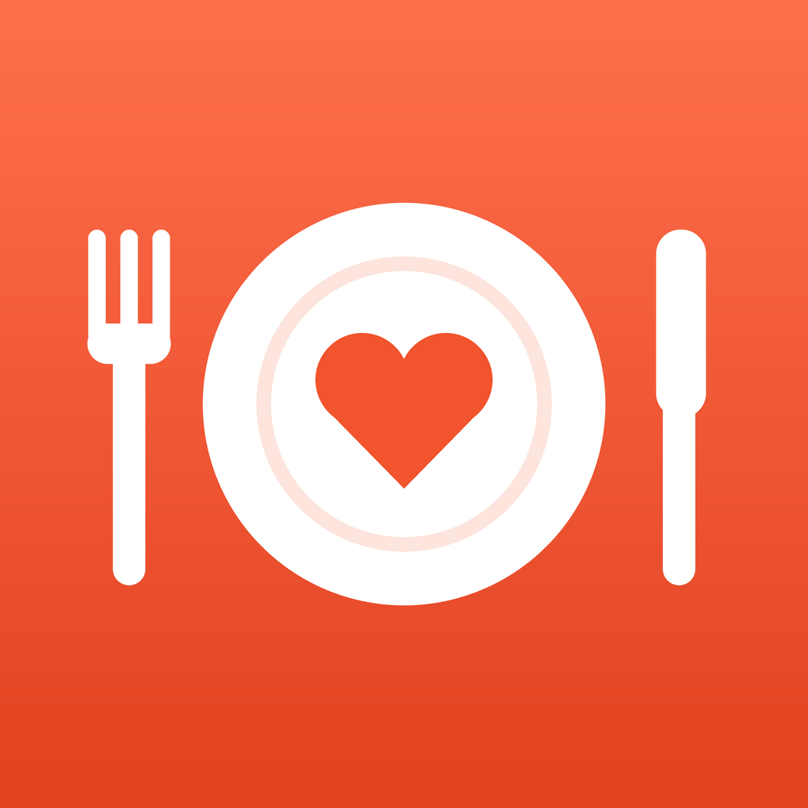

מנהעודכן לאחרונה: 25 בנובמבר 2026
מנה היא אפליקציה לתיעוד ודירוג מנות במסעדות. השימוש בה חינמי ועל אחריותכם. הדירוגים וההמלצות הם דעות של משתמשים ואינם מהווים המלצה מקצועית.
התוכן שאתם מעלים (דירוגים, הערות ותמונות) שייך לכם. בהעלאת תוכן ציבורי אתם מעניקים לנו רשות להציגו באפליקציה. אין להעלות תוכן פוגעני, מטעה, לא חוקי או כזה שמפר זכויות של אחרים; תוכן כזה עשוי להימחק.
מידע על מסעדות (כולל כשרות, כתובות ושעות) מגיע מ-OpenStreetMap ומהקהילה ועשוי להיות לא מדויק. יש לוודא כשרות מול המסעדה.
אפשר למחוק את החשבון בכל עת מתוך האפליקציה. אנחנו רשאים להשעות חשבונות שמפרים את התנאים.
האפליקציה ניתנת "כמות שהיא", ללא אחריות מכל סוג, במידה המרבית המותרת בחוק.